Trong đó các tác tử được trang bị các cảm biến và cơ cấu chấp hành vật lý để di chuyển và tác động vào thế giới thực.
Robot là các tác tử vật lý thực hiện nhiệm vụ bằng cách thao tác trên thế giới thực. Để thực hiện điều đó, chúng được trang bị các cơ cấu chấp hành (effectors) như chân, bánh xe, khớp nối, và bộ gắp (grippers). Cơ cấu chấp hành được thiết kế để tác dụng các lực vật lý lên môi trường. Khi thực hiện, có thể xảy ra một số điều: trạng thái của robot có thể thay đổi (ví dụ: ô tô xoay bánh và tiến lên phía trước trên đường), trạng thái của môi trường có thể thay đổi (ví dụ: một cánh tay robot dùng bộ gắp để đẩy cốc nước trên bàn), và thậm chí trạng thái của những người xung quanh robot có thể thay đổi (ví dụ: khung xương ngoài di chuyển làm thay đổi tư thế chân của con người; hoặc một robot di động tiến về phía cửa thang máy, và một người chú ý đến, tử tế nhường đường hoặc thậm chí bấm nút thang máy giúp robot).
Robot cũng được trang bị các cảm biến (sensors), giúp chúng nhận biết môi trường xung quanh. Ngành chế tạo robot hiện đại sử dụng nhiều loại cảm biến đa dạng, bao gồm camera, radar, laser và micro để đo đạc trạng thái của môi trường và con người xung quanh; cùng các con quay hồi chuyển, cảm biến biến dạng, cảm biến lực xoắn, và gia tốc kế để đo trạng thái bên trong của chính robot.
Cực đại hóa độ hữu dụng kỳ vọng (expected utility) cho một robot có nghĩa là chọn cách kích hoạt các cơ cấu chấp hành để tạo ra các lực vật lý phù hợp — những lực này sẽ dẫn đến những thay đổi trạng thái tích lũy được nhiều phần thưởng kỳ vọng nhất có thể. Xét cho cùng, robot luôn cố gắng hoàn thành một nhiệm vụ nào đó trong thế giới vật lý.
Robot hoạt động trong các môi trường quan sát được một phần và mang tính ngẫu nhiên: camera không thể nhìn qua các góc tường, và các bánh răng có thể bị trượt. Hơn nữa, những người hành động trong cùng môi trường đó lại khó dự đoán, vì vậy robot cần phải đưa ra dự đoán về họ.
Robot thường mô hình hóa môi trường của chúng bằng một không gian trạng thái liên tục (vị trí của robot có tọa độ liên tục) và một không gian hành động liên tục (lượng dòng điện mà robot gửi đến động cơ cũng được đo bằng các đơn vị liên tục). Một số robot hoạt động trong không gian nhiều chiều: ô tô tự lái cần biết vị trí, hướng và vận tốc của chính nó và của các tác tử xung quanh; cánh tay robot có sáu hoặc bảy khớp có thể di chuyển độc lập; và các robot mô phỏng cơ thể người có tới hàng trăm khớp nối.
Việc học của robot bị hạn chế vì thế giới thực từ chối hoạt động nhanh hơn thời gian thực. Trong môi trường mô phỏng, ta có thể sử dụng các thuật toán học (như thuật toán Q-learning được mô tả ở Chương 23) để học trong vài giờ từ hàng triệu lần thử. Tuy nhiên trong môi trường thực, có thể mất nhiều năm để chạy ngần ấy lần thử, và robot không thể mạo hiểm (và do đó không thể học từ) một lần thử có thể gây hư hỏng. Do vậy, việc chuyển đổi những gì đã học trong mô phỏng sang một robot thực tế trong thế giới thực — bài toán sim-to-real (mô phỏng sang thực tế) — là một lĩnh vực nghiên cứu rất sôi động. Các hệ thống robot ứng dụng thực tiễn cần được tích hợp các tri thức tiên nghiệm về robot, môi trường vật lý, và các nhiệm vụ cần thực hiện để robot có thể học nhanh và hoạt động an toàn.
Lĩnh vực Robotics tập hợp nhiều khái niệm mà chúng ta đã thấy trong cuốn sách này, bao gồm ước lượng trạng thái xác suất, nhận thức, lập kế hoạch, học không giám sát, học tăng cường và lý thuyết trò chơi. Đối với một số khái niệm, robotics đóng vai trò như một ứng dụng thực tiễn đầy thách thức. Với một số khái niệm khác, chương này sẽ mở ra các khía cạnh mới, ví dụ như giới thiệu phiên bản liên tục của các kỹ thuật mà trước đây chúng ta chỉ thấy trong các trường hợp rời rạc.
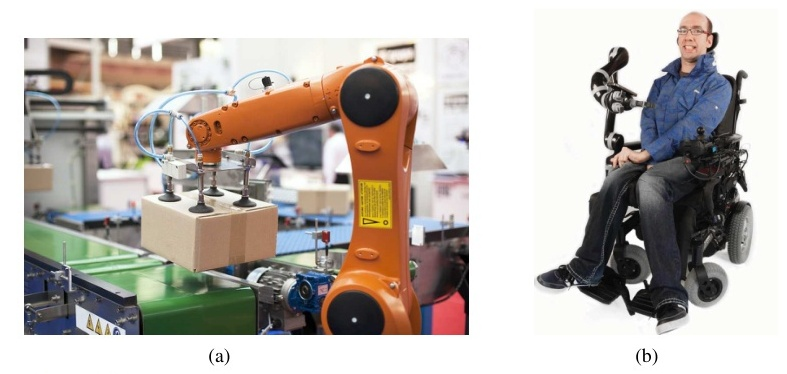
Hình 26.1 (a) Một cánh tay robot công nghiệp với cơ cấu chấp hành ở đầu (end-effector) tùy chỉnh. Nguồn ảnh: Macor/123RF. (b) Một cánh tay robot hỗ trợ Kinova® JACO® được gắn trên xe lăn. Kinova và JACO là nhãn hiệu của Kinova, Inc.
Từ đầu cuốn sách đến nay, chúng ta xem kiến trúc của tác tử — cảm biến, cơ cấu chấp hành, và bộ xử lý — là có sẵn, và chủ yếu tập trung vào chương trình tác tử. Nhưng sự thành công của các robot thực sự phụ thuộc rất nhiều vào thiết kế của các cảm biến và cơ cấu chấp hành sao cho phù hợp với nhiệm vụ.
Khi nghĩ về một con robot, bạn có thể hình dung ra một thứ gì đó có một đầu và hai tay, di chuyển xung quanh bằng chân hoặc bằng bánh xe. Những robot hình người (Anthropomorphic robots) như vậy đã được phổ biến trong các tác phẩm hư cấu như bộ phim The Terminator hay phim hoạt hình The Jetsons. Tuy nhiên các robot ngoài đời thực thì có vô số hình dáng và kích cỡ khác nhau.
Cánh tay robot (Manipulators) thực chất chỉ là những cánh tay robot. Chúng không nhất thiết phải gắn vào một thân robot; chúng có thể chỉ cần bắt vít vào bàn hoặc sàn nhà, giống như trong các nhà máy (Hình 26.1(a)). Một số có khả năng mang vác khối lượng lớn, như các robot lắp ráp ô tô, trong khi một số khác, chẳng hạn như cánh tay gắn trên xe lăn để hỗ trợ người khuyết tật vận động (Hình 26.1(b)), nâng được nhẹ hơn nhưng lại an toàn hơn khi làm việc trong môi trường có con người.
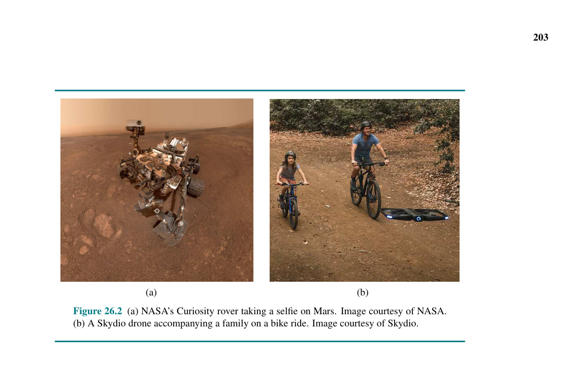
Hình 26.2 (a) Xe tự hành Curiosity của NASA đang chụp ảnh selfie trên Sao Hỏa. Ảnh được cung cấp bởi NASA. (b) Dron Skydio bay theo hỗ trợ gia đình trong chuyến đạp xe. Ảnh được cung cấp bởi Skydio.
Robot di động (Mobile robots) là những robot sử dụng bánh xe, chân hoặc cánh quạt (rotors) để di chuyển xung quanh môi trường. Drone bốn cánh quạt (Quadcopter drones) là một loại phương tiện bay không người lái (UAV); các phương tiện dưới nước tự hành (AUVs) thì lang thang dưới đại dương. Nhưng có nhiều robot di động chỉ ở trong nhà và di chuyển bằng bánh xe, giống như máy hút bụi hay robot giao khăn tắm trong khách sạn. Phiên bản ngoài trời của chúng bao gồm ô tô tự lái (Autonomous cars) hay các xe rover chuyên khám phá địa hình mới, thậm chí là trên bề mặt Sao Hỏa (Hình 26.2). Cuối cùng, robot có chân (Legged robots) dùng để vượt qua các địa hình gồ ghề mà xe có bánh không thể đi tới. Nhược điểm của chúng là việc điều khiển các chân để thực hiện đúng thao tác sẽ thách thức hơn nhiều so với việc chỉ xoay các bánh xe.
Các loại robot khác bao gồm tay chân giả (prostheses), khung xương ngoài (exoskeletons), robot có cánh, bầy đàn (swarms), và cả những môi trường thông minh trong đó robot chính là toàn bộ căn phòng.
Cảm biến là giao diện nhận thức giữa robot và môi trường. Cảm biến thụ động (Passive sensors), chẳng hạn như camera, là những thiết bị quan sát môi trường chân thực nhất: chúng thu nhận các tín hiệu được tạo ra bởi các nguồn khác trong môi trường. Cảm biến chủ động (Active sensors), chẳng hạn như sonar, phát ra năng lượng vào môi trường. Chúng dựa trên thực tế là năng lượng này sẽ bị phản xạ lại vào cảm biến. Cảm biến chủ động thường cung cấp nhiều thông tin hơn cảm biến thụ động, nhưng đổi lại là tiêu thụ nhiều năng lượng hơn và có nguy cơ nhiễu khi sử dụng nhiều cảm biến chủ động cùng một lúc. Chúng ta cũng có thể phân loại cảm biến theo việc nó hướng tới mục đích cảm nhận môi trường, cảm nhận vị trí của robot, hay cảm nhận cấu hình bên trong của robot.
Máy định tầm (Range finders) là các cảm biến đo khoảng cách đến các vật thể lân cận. Sonar là loại máy định tầm chủ động phát ra sóng âm định hướng, khi sóng này va đập vào vật thể và phản xạ lại, một phần âm thanh quay trở về cảm biến. Thời gian và cường độ của tín hiệu dội về sẽ cho biết khoảng cách đến vật thể lân cận. Sonar là công nghệ được lựa chọn cho các phương tiện ngầm tự hành, và cũng từng rất phổ biến trong thời kỳ đầu của robot trong nhà. Thị giác âm thanh nổi (Stereo vision) dựa vào nhiều camera để chụp lại môi trường từ những góc nhìn hơi khác nhau, sau đó phân tích độ sai lệch (parallax) trong những hình ảnh đó để tính toán khoảng cách của các vật thể xung quanh.
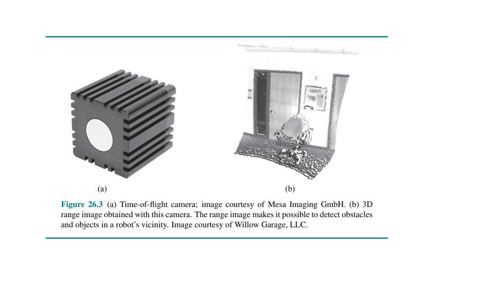
Hình 26.3 (a) Camera đo thời gian bay (Time-of-flight camera); ảnh do Mesa Imaging GmbH cung cấp. (b) Hình ảnh độ sâu 3D thu được từ camera này. Ảnh độ sâu giúp robot có thể phát hiện chướng ngại vật và các vật thể ở vùng lân cận. Ảnh do Willow Garage, LLC cung cấp.
Đối với các robot di động trên mặt đất, sonar và stereo vision ngày nay ít được dùng vì độ chính xác không cao. Kinect là một cảm biến giá rẻ phổ biến, kết hợp một camera và máy chiếu ánh sáng có cấu trúc (Structured light). Nó chiếu một dạng lưới lên một khung cảnh. Camera quan sát cách các đường lưới bị uốn cong, từ đó cung cấp cho robot thông tin về hình dạng các vật thể trong cảnh. Nếu muốn, tia chiếu có thể là ánh sáng hồng ngoại để không gây nhiễu các cảm biến khác (như mắt người).
Hầu hết robot mặt đất hiện nay được trang bị các máy đo tầm quang học chủ động. Tương tự như sonar, cảm biến quang học phát ra tín hiệu chủ động (ánh sáng) và đo thời gian cho đến khi tín hiệu phản xạ về cảm biến. Hình 26.3(a) hiển thị một camera đo thời gian bay (Time-of-flight camera). Camera này thu nhận các ảnh độ sâu như hiển thị ở Hình 26.3(b) với tốc độ lên đến 60 khung hình / giây. Ô tô tự lái thường sử dụng Lidar quét (Scanning lidars - viết tắt của light detection and ranging) — các cảm biến chủ động phát ra chùm tia laser và cảm nhận chùm tia dội lại, cho phép đo khoảng cách chính xác đến từng centimet ở cự ly 100 mét. Chúng sử dụng các hệ thống gương hoặc cấu kiện quay phức tạp để quét chùm tia xuyên suốt không gian và vẽ nên bản đồ. Scanning lidar thường hoạt động tốt hơn camera time-of-flight ở cự ly xa và cũng hiệu quả hơn dưới ánh sáng ban ngày.
Radar thường là cảm biến định tầm ưu tiên cho các phương tiện bay (cả tự lái lẫn không tự lái). Radar có thể đo khoảng cách xa tới hàng km, và có ưu thế hơn so với cảm biến quang học ở chỗ chúng có thể nhìn xuyên sương mù. Ở cự ly rất gần, ta có cảm biến xúc giác (Tactile sensors) như râu (whiskers), tấm va chạm (bump panels), và da nhạy cảm chạm (touch-sensitive skin). Các cảm biến này đo lường dựa trên tiếp xúc vật lý và chỉ dùng để cảm nhận các vật ở sát robot.
Lớp quan trọng thứ hai là cảm biến định vị (Location sensors). Hầu hết đều dùng đo khoảng cách như thành phần cốt lõi để xác định vị trí. Ngoài trời, Hệ thống Định vị Toàn cầu (GPS) là giải pháp phổ biến nhất. GPS đo khoảng cách đến các vệ tinh phát tín hiệu dạng xung. Bằng cách phân tích độ trễ pha và dùng phương pháp đạc tam giác từ nhiều vệ tinh, thiết bị thu GPS có thể xác định vị trí tuyệt đối trên Trái Đất với sai số vài mét. GPS vi phân (Differential GPS) bao gồm một máy thu trên mặt đất có vị trí đã biết, giúp tăng độ chính xác lên mức milimet trong điều kiện lý tưởng.
Đáng tiếc, GPS không hoạt động trong nhà hoặc dưới nước. Trong nhà, định vị thường được thực hiện bằng cách gắn các đèn tín hiệu (beacons) ở các vị trí đã biết, hoặc qua phân tích tín hiệu Wi-Fi. Dưới nước, các trạm sóng âm chủ động giúp AUV biết vị trí tương đối của chúng so với các trạm.
Lớp cảm biến thứ ba là cảm biến nội cảm (Proprioceptive sensors), cung cấp cho robot thông tin về chuyển động của chính nó. Để đo vị trí góc chính xác của khớp nối, động cơ thường gắn bộ giải mã trục (Shaft decoders). Trên tay máy robot, thiết bị này theo dõi vị trí các khớp. Trên robot di động, nó báo số vòng quay của bánh xe để thực hiện thuật toán đo đường (Odometry) — tính toán quãng đường đã đi. Thật không may, bánh xe rất hay bị trôi và trượt, nên phép đo đường chỉ chính xác trong khoảng cách ngắn. Cảm biến quán tính (Inertial sensors), như con quay hồi chuyển, giúp giảm sai số này bằng cách dựa vào tính ì của khối lượng chống lại sự thay đổi vận tốc.
Một số thông tin về trạng thái khác của robot được đo bằng cảm biến lực (Force sensors) và cảm biến mô-men xoắn (Torque sensors). Các cảm biến này không thể thiếu khi robot xử lý các vật mỏng manh hoặc vật chưa rõ kích thước và hình dáng. Hãy tưởng tượng một cánh tay robot công nghiệp nặng 1 tấn đang vặn bóng đèn. Rất dễ để áp một lực quá lớn làm vỡ bóng đèn. Cảm biến lực cho phép robot cảm nhận lực nắm giữ, và cảm biến xoắn giúp robot cảm nhận lực quay. Tuy nhiên, việc trang bị những cảm biến cao cấp đi kèm năng lực tính toán để giám sát chúng là một thách thức lớn.
Cơ chế khởi xướng chuyển động của cơ cấu chấp hành được gọi là bộ truyền động (Actuator). Các loại actuator phổ biến nhất là động cơ điện (Electric actuator) dùng dòng điện để quay. Cơ cấu thủy lực (Hydraulic actuators) dùng chất lỏng áp suất cao (dầu, nước) và Cơ cấu khí nén (Pneumatic actuators) dùng khí nén để sinh ra chuyển động cơ học.
Bộ truyền động hay được dùng để điều khiển các khớp nối. Trong các khớp xoay (Revolute joints), một liên kết sẽ xoay quanh liên kết kia. Ở các khớp lăng trụ (Prismatic joints), một liên kết sẽ trượt dọc theo liên kết kia. Cả hai đều là những khớp đơn trục. Ngoài ra còn có các khớp cầu, khớp trụ, và khớp phẳng là các khớp đa trục.
Để tương tác với vật thể trong môi trường, robot sử dụng bộ kẹp (Grippers). Phổ biến nhất là kẹp song song (Parallel jaw gripper) với 2 ngón tay và 1 động cơ di chuyển hai ngón lại gần nhau. Cầu kỳ hơn, có bộ kẹp 3 ngón, hoặc các bàn tay mô phỏng con người (Anthropomorphic hands). Dù rất linh hoạt nhưng việc học cách điều khiển các bàn tay phức tạp này rất nhiều khó khăn.
Giờ đây khi đã biết về phần cứng của robot, chúng ta cần xem xét phần mềm (Agent software) giúp điều khiển thiết bị đạt được mục tiêu. Chúng ta cần định rõ khuôn khổ tính toán cho tác tử. Tác tử đã được nghiên cứu với MDPs trong môi trường ngẫu nhiên nhưng quan sát toàn phần, POMDPs đối với tính quan sát một phần, và lý thuyết trò chơi cho nhiều tác tử.
Robot không ở trong một môi trường đơn độc; chúng còn bị nhiễu, quan sát một phần và nhiều tác tử (multiagent). Khi một tác tử là người và một tác tử là robot ở hành lang hẹp, chúng cần phối hợp với nhau. Vậy, phần thưởng (Reward function) của robot là gì? Thường thì robot được chế tạo để phục vụ con người — ví dụ mang bữa ăn tới cho bệnh nhân. Robot sẽ cần giải mã các mong muốn của người dùng, hoặc nhờ kỹ sư cung cấp xấp xỉ phần thưởng phù hợp.
Liên quan tới không gian hành động, quan sát và trạng thái, hình thái tổng quát nhất là quan sát được cung cấp từ dữ liệu cảm biến thô (ảnh camera, tín hiệu lidar); hành động là dòng điện truyền vào các mô tơ; và trạng thái là những gì robot cần biết để đưa ra quyết định. Sự chênh lệch giữa các tín hiệu tầng thấp (low-level) này và các kế hoạch (high-level) là vô cùng lớn.
Trong thực tiễn, robot sử dụng kiến trúc phân tầng (hierarchy): Lập kế hoạch nhiệm vụ (Task planning) xử lý những tác vụ cấp cao (như: đi đến cửa, mở cửa, đến thang máy). Tiếp đó, Lập kế hoạch chuyển động (Motion planning) phụ trách tìm đường đi (path) từ điểm này đến điểm khác. Cuối cùng, Điều khiển (Control) được dùng để bám sát và thực hiện chuyển động đó bằng cơ cấu chấp hành. Tách biệt, Học tùy chọn (Preference learning) sẽ đánh giá mục tiêu người dùng, còn Dự đoán con người (People prediction) để đoán hành động tiếp theo của những người xung quanh.
Ngày nay, xu hướng của Robotics không chỉ nằm ở từng tầng riêng lẻ, mà là tích hợp (integration): giải quyết motion planning và control cùng lúc, hoặc tích hợp task và motion, rồi đóng vòng lặp phản hồi (feedback loop) giữa perception và action.
Nhận thức là quá trình robot ánh xạ các phép đo cảm biến thành những biểu diễn nội tại về môi trường. Phần lớn quá trình này sử dụng các kỹ thuật thị giác máy tính từ chương trước. Nhưng nhận thức trong robotics còn phải đối phó với nhiều cảm biến bổ sung như Lidar và cảm biến xúc giác.
Nhận thức rất khó khăn do cảm biến bị nhiễu và môi trường có tính quan sát một phần, không thể dự đoán và thường xuyên thay đổi. Nói cách khác, robot gặp phải tất cả những vấn đề về ước lượng trạng thái (hay lọc) mà chúng ta đã thảo luận trong Mục 14.2. Theo nguyên tắc thực nghiệm, các biểu diễn nội tại tốt cho robot có ba đặc điểm: 1. Chúng chứa đủ thông tin để robot đưa ra quyết định tốt. 2. Chúng được cấu trúc sao cho có thể cập nhật hiệu quả. 3. Chúng tự nhiên theo nghĩa các biến nội tại tương ứng với các biến trạng thái tự nhiên trong thế giới vật lý.
Trong Chương 14, chúng ta đã thấy bộ lọc Kalman, HMM và mạng Bayes động có thể biểu diễn mô hình chuyển tiếp và mô hình cảm biến của một môi trường quan sát một phần, và chúng ta đã mô tả các thuật toán chính xác lẫn xấp xỉ để cập nhật trạng thái niềm tin (belief state) — phân phối xác suất hậu nghiệm (posterior probability distribution) trên các biến trạng thái môi trường. Với bài toán robot, chúng ta đưa cả các hành động trong quá khứ của robot vào làm biến quan sát trong mô hình.
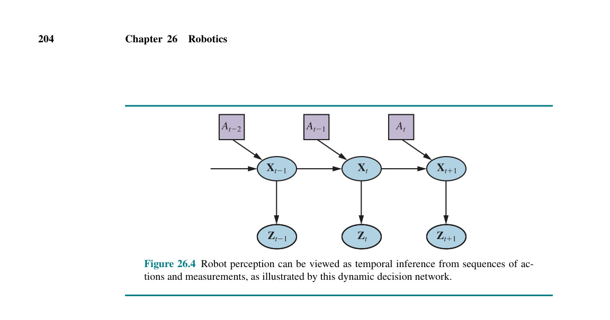
Hình 26.4 Nhận thức của robot có thể được xem như quá trình suy diễn theo thời gian từ các chuỗi hành động và phép đo lường, được minh họa bằng mạng lưới quyết định động này.
Chúng ta muốn tính trạng thái niềm tin mới, \(P(X_{t+1} | z_{1:t+1}, a_{1:t})\), từ trạng thái niềm tin hiện tại, \(P(X_t | z_{1:t}, a_{1:t-1})\), và quan sát mới \(z_{t+1}\). Chúng ta đã thực hiện việc này trong Mục 14.2, nhưng ở đây có hai điểm khác biệt: chúng ta phải điều kiện hóa trên cả các hành động cùng với quan sát, và xử lý các biến liên tục thay vì rời rạc. Do đó, phương trình lọc đệ quy (14.5 ở trang 485) được sửa đổi thành phép tích phân thay vì phép tổng:
$$ P(X_{t+1} | z_{1:t+1}, a_{1:t}) = \alpha P(z_{t+1} | X_{t+1}) \int P(X_{t+1} | x_t, a_t) P(x_t | z_{1:t}, a_{1:t-1}) dx_t \quad (26.1) $$
Phương trình này cho biết xác suất hậu nghiệm trên các biến trạng thái \(X\) tại thời điểm \(t+1\) được tính đệ quy từ ước lượng tương ứng ở một bước thời gian trước đó. Tính toán này liên quan đến hành động trước đó \(a_t\) và phép đo cảm biến hiện tại \(z_{t+1}\). Xác suất \(P(X_{t+1} | x_t, a_t)\) được gọi là mô hình chuyển tiếp (transition model) hoặc mô hình chuyển động (motion model), và \(P(z_{t+1} | X_{t+1})\) là mô hình cảm biến (sensor model).
Định vị (Localization) là bài toán tìm xem mọi thứ ở đâu — bao gồm cả chính bản thân robot. Để đơn giản hóa, hãy xét một robot di chuyển chậm trong thế giới 2D phẳng và giả định robot đã được cung cấp một bản đồ chính xác. Tư thế (pose) của một robot di động như vậy được xác định bởi hai tọa độ Descartes \(x\) và \(y\) cùng với hướng (heading) \(\theta\), như trong
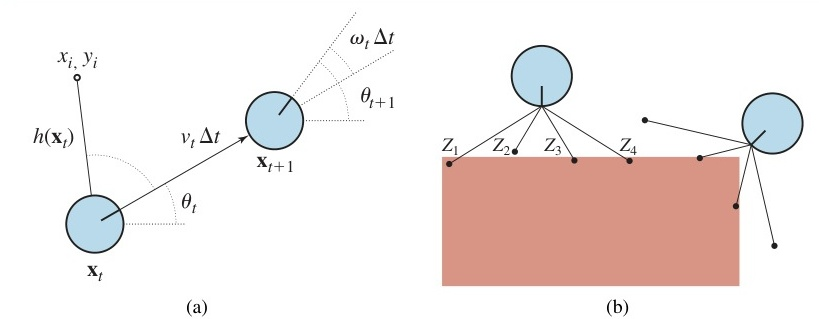
Trong xấp xỉ động học, mỗi hành động là đặc tả tức thời của hai vận tốc: vận tốc tịnh tiến \(v_t\) và vận tốc góc \(\omega_t\). Trong một khoảng thời gian nhỏ \(\Delta t\), mô hình tất định của robot được tính bằng:
$$ \hat{X}_{t+1} = f(X_t, v_t, \omega_t) = X_t + \begin{pmatrix} v_t \Delta t \cos\theta_t \\ v_t \Delta t \sin\theta_t \\ \omega_t \Delta t \end{pmatrix} $$
Trong thực tế, do robot luôn có sai số trượt bánh, điều này được mô hình hóa bằng phân phối Gaussian (chuẩn) với trung bình là \(f(X_t, v_t, \omega_t)\) và ma trận hiệp phương sai \(\Sigma_x\): $$ P(X_{t+1} | X_t, v_t, \omega_t) = \mathcal{N}(\hat{X}_{t+1}, \Sigma_x) $$ Đây chính là mô hình chuyển động của robot.
Tiếp theo, ta cần mô hình cảm biến. Xét một cảm biến nhận dạng các điểm chuẩn (landmarks) trong môi trường. Với mỗi điểm chuẩn ở vị trí \((x_i, y_i)^\top\) đã biết, khoảng cách và góc phương vị được cảm biến ghi lại. Dự đoán không có nhiễu (noiseless prediction) sẽ được tính bằng hình học đơn giản:
$$ \hat{z}_t = h(x_t) = \begin{pmatrix} \sqrt{(x_t - x_i)^2 + (y_t - y_i)^2} \\ \arctan \frac{y_i - y_t}{x_i - x_t} - \theta_t \end{pmatrix} $$
Thêm nhiễu Gaussian với hiệp phương sai \(\Sigma_z\), ta có mô hình cảm biến: \(P(z_t | x_t) = \mathcal{N}(\hat{z}_t, \Sigma_z)\).
Hình 26.5 (a) Mô hình động học đơn giản của robot di động. (b) Mô hình cảm biến dựa trên chùm tia quét khoảng cách (range scan). Hình cho thấy hai tư thế khả dĩ phát sinh dữ liệu, trong đó tư thế bên trái có khả năng cao hơn.
Bộ lọc hạt và Lọc Kalman
Hầu hết các thuật toán định vị hiện đại dùng lọc hạt (particle filter) hoặc lọc Kalman (Kalman filter) để biểu diễn trạng thái niềm tin \(P(X_t | z_{1:t}, a_{1:t-1})\).
- Định vị bằng lọc hạt còn được gọi là Định vị Monte Carlo (Monte Carlo localization - MCL).
- Định vị bằng lọc Kalman: Do niềm tin Gaussian chỉ kín dưới mô hình chuyển động tuyến tính, các bài toán thực tế phi tuyến được xấp xỉ bằng cách tuyến tính hóa (Linearization) hay khai triển Taylor (Taylor expansion). Bộ lọc Kalman áp dụng cách tuyến tính hóa này được gọi là Lọc Kalman mở rộng (Extended Kalman Filter - EKF).
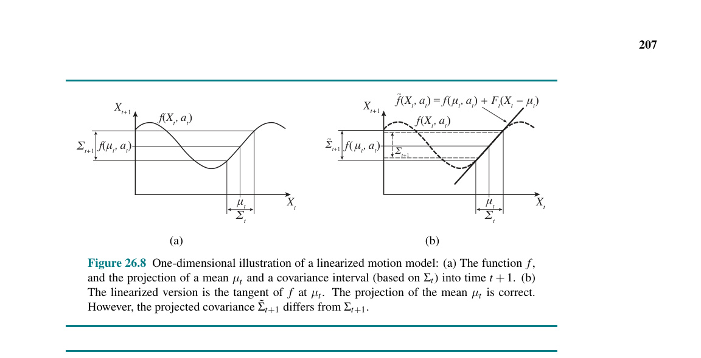
Hình 26.8 Tuyến tính hóa mô hình chuyển động. (a) Không tuyến tính hóa. (b) Tuyến tính hóa qua đạo hàm (tiếp tuyến).
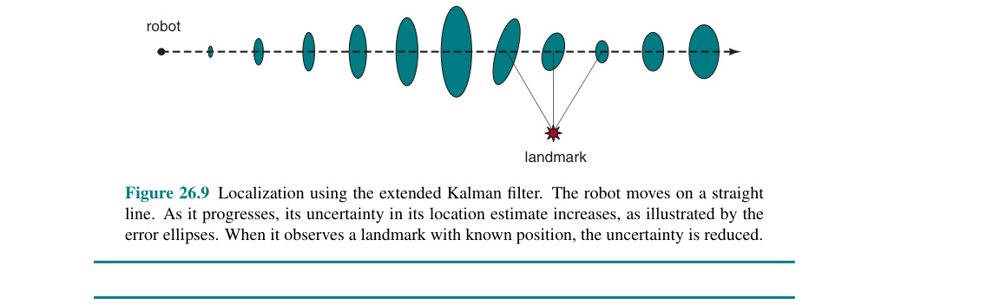
Hình 26.9 Định vị dùng Lọc Kalman mở rộng. Vùng elip sai số mở rộng khi robot di chuyển mù, và thu nhỏ lại khi phát hiện điểm chuẩn (landmark).
Trong một số tình huống, chưa có bản đồ nào được cung cấp. Robot sẽ phải tự tạo bản đồ. Đây là bài toán con gà và quả trứng: robot phải định vị trên một bản đồ chưa rõ ràng, đồng thời xây dựng bản đồ đó khi chưa biết rõ vị trí của mình. Đây được gọi là Định vị và Vẽ bản đồ đồng thời (Simultaneous localization and mapping - SLAM).
Không phải tất cả nhận thức của robot đều là định vị hay vẽ bản đồ. Robot còn nhận thức nhiệt độ, mùi, âm thanh, v.v. Nhiều đại lượng này có thể được ước lượng qua các biến thể của mạng Bayes động.
Học máy (Machine learning) đóng vai trò vô cùng quan trọng, đặc biệt khi chưa biết biểu diễn nội tại tốt nhất. Một phương pháp là ánh xạ dữ liệu cảm biến đa chiều thành không gian ít chiều hơn qua học không giám sát (nhúng không gian chiều thấp - low-dimensional embedding).
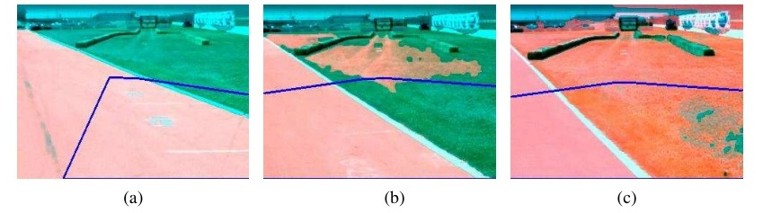
Hình 26.10 (a,b,c) Áp dụng phân loại bằng thị giác thích ứng cho "bề mặt có thể lái được". Bề mặt màu hồng là nơi có thể lái. Khi xe đi lệch ra cỏ, cỏ cũng bắt đầu được đánh giá là mặt đường an toàn. (Ảnh do Sebastian Thrun cung cấp).
Kỹ thuật giúp robot tự thu thập dữ liệu huấn luyện (có nhãn) được gọi là học tự giám sát (Self-supervised learning). Robot dùng các cảm biến tầm gần có độ chính xác cao để gán nhãn cho những dữ liệu ở xa do camera thu thập, giúp nó có thể "nhìn xa hơn" và di chuyển nhanh hơn, chỉ chậm lại khi gặp địa hình mới.
Mọi tính toán của robot cuối cùng đều dẫn đến quyết định di chuyển như thế nào, từ mức độ lập kế hoạch tác vụ trừu tượng cho đến dòng điện gửi tới động cơ. Trong phần này, ta giả định quá trình nhận thức (perception) đã hoàn tất và môi trường có tính quan sát toàn phần. Đồng thời, giả định rằng các động lực học (dynamics) chuyển tiếp của môi trường là tất định.
Bắt đầu bằng việc tách biệt giữa chuyển động (motion) và điều khiển (control). Ta định nghĩa đường đi (Path) là một chuỗi các điểm trong không gian hình học mà một robot (hoặc một bộ phận của robot, như cánh tay) sẽ tuân theo. Ở đây ta xem nó như một đường cong trong không gian vật lý thay vì một chuỗi các hành động rời rạc. Việc tìm kiếm một đường đi tốt được gọi là lập kế hoạch chuyển động (Motion planning).
Sau khi có được đường đi, nhiệm vụ thực thi chuỗi hành động để bám theo đường đi đó gọi là điều khiển bám quỹ đạo (Trajectory tracking control). Quỹ đạo (Trajectory) là một đường đi có gắn thời gian cho từng điểm. Đường đi (path) chỉ nói "đi từ A đến B rồi C," trong khi quỹ đạo (trajectory) chỉ định "bắt đầu ở A, mất 1 giây để đến B, và thêm 1.5 giây nữa để đến C."
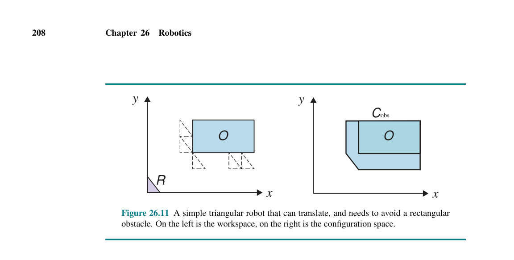
Hình 26.11 Một robot hình tam giác đơn giản chỉ có thể tịnh tiến, cần tránh chướng ngại vật hình chữ nhật. Bên trái là không gian làm việc (workspace), bên phải là không gian cấu hình (configuration space).
Không gian vật lý mà robot di chuyển được gọi là không gian làm việc (Workspace). Nếu coi robot như một tập hợp tọa độ \((x,y)\), các phép tính để tránh va chạm sẽ rất chậm chạp. Ta có thể đơn giản hóa bằng cách biểu diễn tất cả các điểm cấu thành robot dưới dạng một điểm duy nhất trong một không gian đa chiều trừu tượng gọi là không gian cấu hình (Configuration space, hay C-space).
Với một robot tam giác không xoay, 2 chiều tọa độ \((x,y)\) là đủ cho không gian cấu hình. Nếu robot có thể xoay, ta cần không gian 3 chiều \((x, y, \theta)\). Bất kỳ điểm nào trong C-space khiến thân robot va chạm vào chướng ngại vật trong workspace sẽ tạo nên các chướng ngại vật trong C-space (C-space obstacle). Không gian còn lại được gọi là không gian tự do (Free space).
Với cánh tay robot 2 liên kết, mỗi khớp nối có thể di chuyển độc lập được gọi là bậc tự do (Degrees of freedom - DOF). Để xác định vị trí mọi điểm trên cánh tay từ các góc của khớp, ta dùng ánh xạ động học thuận (Forward kinematics). Ngược lại, để chuyển một tọa độ không gian (x, y) thành các góc của khớp robot, ta giải bài toán động học nghịch (Inverse kinematics).
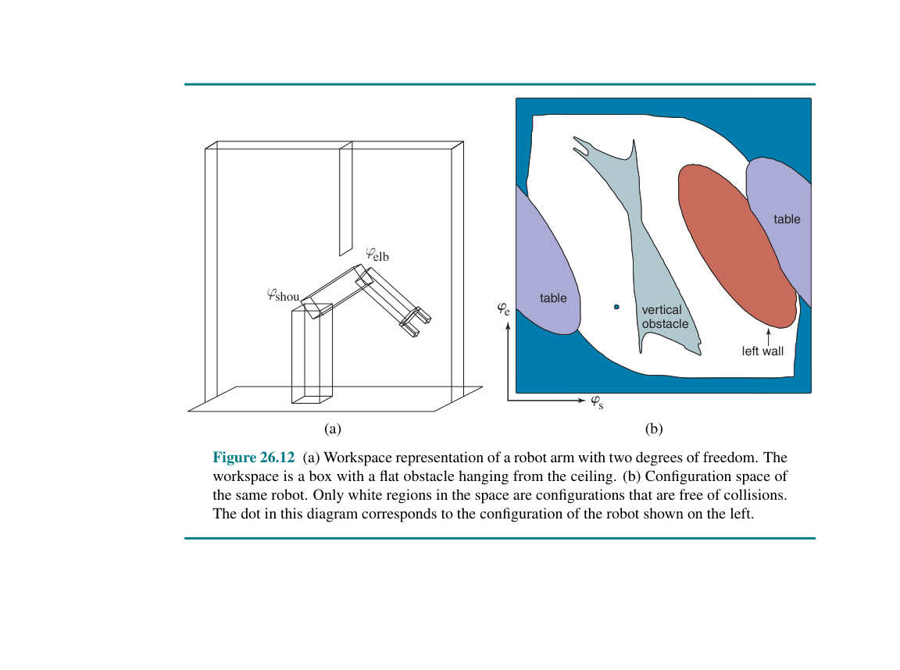
Hình 26.12 (a) Không gian làm việc của cánh tay 2 bậc tự do. (b) Không gian cấu hình của nó. Vùng màu tối là các trạng thái va chạm.
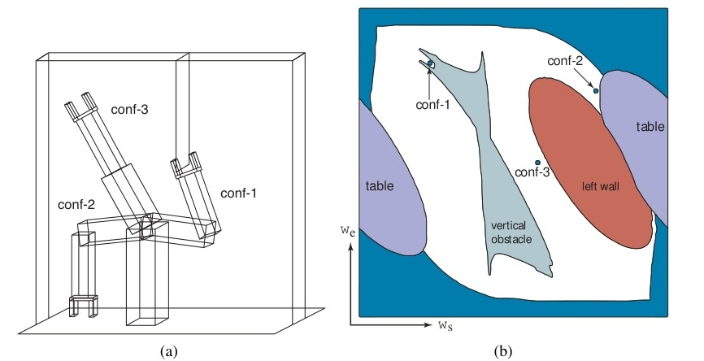
Lập kế hoạch chuyển động là tìm kiếm một kế hoạch đưa robot từ cấu hình này sang cấu hình khác mà không va chạm. Bài toán này kinh điển đến mức thường được gọi là bài toán người chuyển đàn piano (Piano mover's problem). Cho không gian làm việc \(W\), vùng chướng ngại vật \(O\), và các cấu hình ban đầu \(q_s\) cùng đích \(q_g\). Ta cần tìm một đường đi liên tục \(\tau(t)\) đi trong vùng không gian tự do.
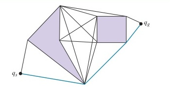
Hình 26.14 Đồ thị tầm nhìn (Visibility graph). Đường đi nối các đỉnh không bị chướng ngại vật cản tầm nhìn.
Đồ thị tầm nhìn (Visibility graphs): Trải qua các đỉnh đa giác, ta nối mọi đỉnh có thể "nhìn thấy" nhau (không cắt qua đa giác). Cách này đảm bảo đường đi ngắn nhất, nhưng có rủi ro đi quá sát mép chướng ngại vật.
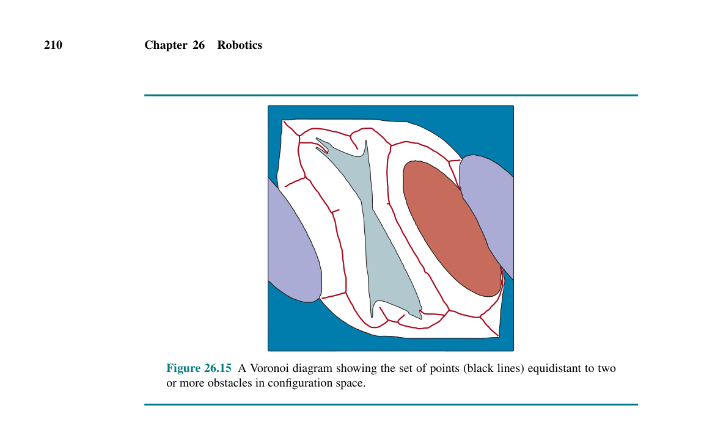
Hình 26.15 Sơ đồ Voronoi (Voronoi diagram) chứa các đường cách đều hai hoặc nhiều chướng ngại vật.
Sơ đồ Voronoi (Voronoi diagrams): Thay vì bám sát mép, phương pháp này ép đường đi nằm cách xa chướng ngại vật nhất có thể bằng cách tạo ra các vùng cách đều chúng.
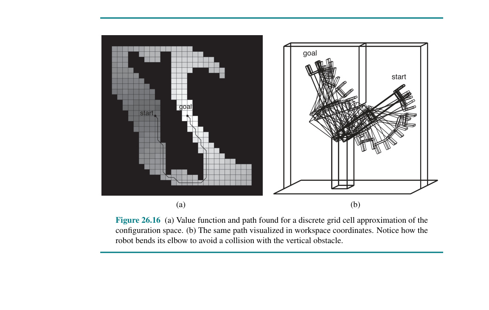
Hình 26.16 (a) Hàm giá trị và đường đi tìm được cho không gian cấu hình được lưới hóa (grid cell). (b) Phục hồi cùng đường đi đó trong không gian làm việc. Phân rã lưới (Cell decomposition): Phân chia không gian thành các ô và giải quyết bài toán thông qua tìm kiếm đường đi (như \(A^*\)) trên các ô đó. Rất phổ biến nhưng gặp vấn đề về "lời nguyền chiều không gian" khi số lượng chiều của robot tăng cao.
Điều quan trọng trong phương pháp ô lưới là ta không nhất thiết phải biểu diễn toàn bộ vùng C-space. Thay vào đó, ta sử dụng một bộ kiểm tra va chạm (Collision checker), một hàm ánh xạ giá trị 1 nếu cấu hình va chạm và 0 nếu ngược lại.
Một thách thức nữa với tìm kiếm trên lưới là đường đi thường tạo thành các góc nhọn, trong khi robot thực tế có quán tính và không thể đổi hướng tức thời. Giải pháp là thuật toán Hybrid A*, sử dụng mô hình động học liên tục của robot để đảm bảo các bước nhảy từ ô này sang ô khác tạo ra những đoạn cong mượt mà có thể thực thi được.
Lập kế hoạch ngẫu nhiên (Randomized motion planning)
Thay vì phân chia không gian thành lưới đều đặn, phương pháp ngẫu nhiên lấy mẫu các điểm và tạo cạnh nếu có thể nối chúng đơn giản (như đường thẳng) mà không va chạm. Nổi bật là thuật toán Bản đồ lộ trình xác suất (Probabilistic roadmap - PRM).
Thuật toán lấy mẫu M điểm mốc (milestones) trong C-space, kiểm tra va chạm, rồi nối từng mốc với \(k\) mốc gần nhất. Cuối cùng, dùng đồ thị thu được để tìm đường đi. Phương pháp này hoàn chỉnh theo xác suất (probabilistically complete) – tức là nếu có đường đi, nó sẽ tìm thấy nếu được lấy mẫu đủ lâu.
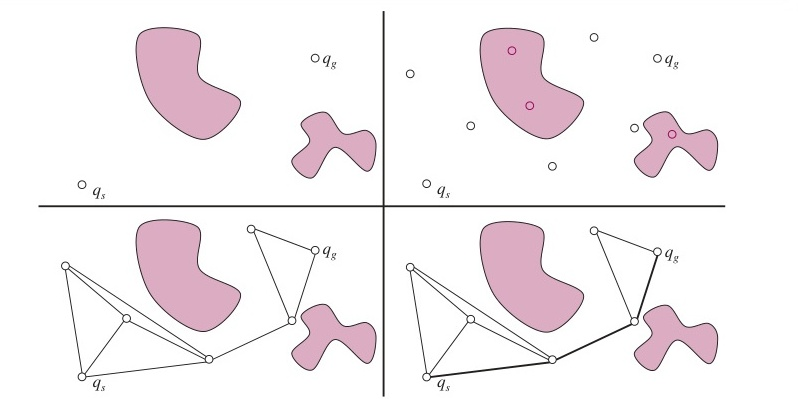
Hình 26.17 Thuật toán PRM. Trên trái: khởi đầu và đích. Trên phải: lấy mẫu M mốc tự do. Dưới trái: nối với k mốc gần nhất. Dưới phải: tìm đường đi ngắn nhất.
Cây khám phá ngẫu nhiên nhanh (Rapidly exploring random trees - RRTs)
RRT rất phổ biến cho các bài toán truy vấn đơn (single-query). Nó xây dựng 2 cây: một từ gốc là điểm bắt đầu, một từ điểm đích. Cây phát triển bằng cách lấy một mốc ngẫu nhiên, tìm điểm gần nhất trên cây và kéo dài từ điểm đó về hướng mốc ngẫu nhiên một khoảng \(\delta\). Nếu 2 cây kết nối được, ta có đường đi.
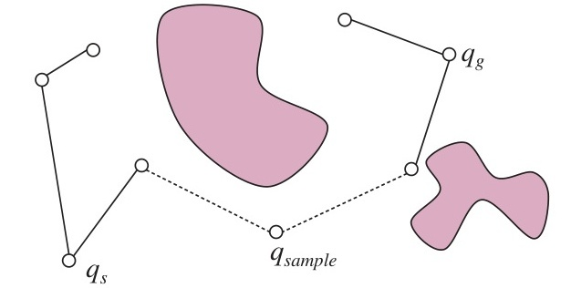
Hình 26.18 Thuật toán RRT hai chiều.
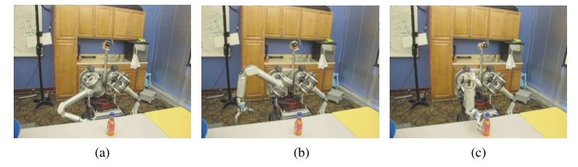
Hình 26.19 Các bước đường đi từ RRT sau khi được xử lý "đi tắt" (short-cutting) để mượt mà hơn.
Biến thể RRT* cải tiến RRT để tìm đường đi tiệm cận tối ưu bằng cách đi dây lại (rewire) cây nếu việc nối qua điểm mốc mới tiết kiệm chi phí hơn.
Tối ưu hóa quỹ đạo (Trajectory optimization)
Khác với RRT (tìm đường khả thi rồi làm mượt), phương pháp này bắt đầu bằng một đường đi thẳng (dù cắt qua chướng ngại vật), sau đó liên tục đẩy đường đi rời khỏi chướng ngại vật qua phương pháp hạ gradient dựa trên hàm chi phí \(J = J_{obs} + \lambda J_{eff}\). Hàm này cân bằng giữa chi phí tránh va chạm (\(J_{obs}\)) và tính hiệu quả, ngắn gọn (\(J_{eff}\)).
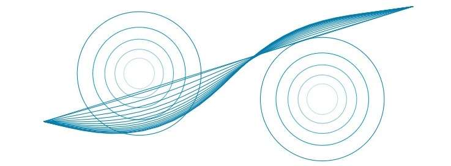
Hình 26.20 Tối ưu quỹ đạo. Đường thẳng ban đầu bị chướng ngại vật bẻ cong dần để tìm đường an toàn ngắn nhất.
Chúng ta có đường đi, nhưng làm sao chuyển nó thành dòng điện, mô-men xoắn để robot thực sự di chuyển? Đó là lĩnh vực của Lý thuyết điều khiển (Control theory).
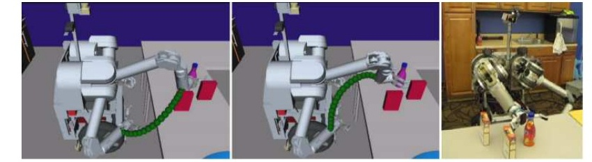
Hình 26.21 Giải quyết bài toán đưa tay với lấy chai nước bằng bộ tối ưu quỹ đạo.
Trước tiên, ta dùng mô hình động lực học (Dynamics model) \(\ddot{q} = f(q, \dot{q}, u)\) và động lực học nghịch (Inverse dynamics) để tính toán lực \(\tau\) cần thiết để tạo ra gia tốc \(\ddot{q}\). Nhưng đường đi ban đầu chỉ là hình học, nên ta cần đặt lại thời gian (Retiming) biến nó thành quỹ đạo thực sự \(\xi(t)\) với thời gian cụ thể cho từng đoạn.
Trên thực tế, mô hình động lực học không bao giờ hoàn hảo, luôn có ma sát, nhiễu loạn làm robot chệch hướng. Để giải quyết, ta dùng điều khiển phản hồi:
- Bộ điều khiển P (Proportional): Cung cấp lực tỉ lệ thuận với sai số vị trí. \(u(t) = K_P(\xi(t) - q_t)\). Nhược điểm: gây dao động mạnh quanh đường đích (như lò xo) do quán tính.
- Bộ điều khiển PD (Proportional Derivative): Thêm thành phần đạo hàm (vận tốc sai số) để giảm xóc (dampen). \(u(t) = K_P(\xi(t) - q_t) + K_D(\dot{\xi}(t) - \dot{q}_t)\). Triệt tiêu dao động hiệu quả.
- Bộ điều khiển PID (Proportional Integral Derivative): Thêm thành phần tích phân để xóa bỏ các sai số hệ thống kéo dài theo thời gian.
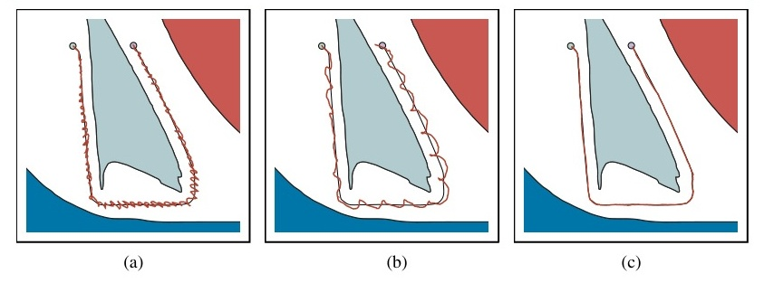
Hình 26.22 Điều khiển tay robot. (a) Bộ điều khiển P với hệ số 1.0 gây dao động cực mạnh. (b) Bộ điều khiển P hệ số 0.1 vẫn bị dao động. (c) Bộ điều khiển PD giúp bám quỹ đạo mượt mà hơn nhiều.
Một giải pháp tối ưu hơn là điều khiển mô-men tính toán (Computed torque control), kết hợp thành phần tiến quản (feedforward) từ động lực học nghịch và thành phần phản hồi (feedback) từ PD.
Thay vì tách rời lập kế hoạch quỹ đạo và bám theo quỹ đạo, điều khiển tối ưu tối ưu hóa thẳng trên các hành động (mô-men), xem xét luôn cả động lực học. Điển hình là bài toán Bộ điều chỉnh toàn phương tuyến tính (Linear Quadratic Regulator - LQR) khi chi phí là hàm bậc 2 và động lực học là tuyến tính. Trong bài toán phi tuyến phức tạp hơn, người ta sử dụng ILQR (Iterative LQR) để xấp xỉ tuyến tính và giải lặp.
Trong robotics, sự bất định phát sinh do tính quan sát một phần của môi trường và do tác động ngẫu nhiên của các thao tác. Phần lớn các robot hiện đại đều xấp xỉ bài toán này bằng cách chọn giả thuyết trạng thái có khả năng cao nhất và thực hiện lập kế hoạch như thể môi trường là tất định.
Tuy nhiên, nếu giả thuyết có khả năng cao nhất bị thay đổi nhiều, việc bám theo kế hoạch cũ sẽ không hiệu quả. Giải pháp là Lập kế hoạch lại trực tuyến (Online replanning). Rất nhiều robot sử dụng kỹ thuật Điều khiển dự đoán mô hình (Model Predictive Control - MPC), trong đó chúng lập kế hoạch cho một khung thời gian ngắn nhưng liên tục lập lại kế hoạch ở mỗi bước.
Sự bất định cũng đòi hỏi những hành động thu thập thông tin. Khung lập kế hoạch thông thường thiếu khả năng dự trù "giá trị của thông tin". Vì vậy, các nhà thiết kế tạo ra các chuyển động có phòng vệ (Guarded movements). Ví dụ, yêu cầu robot giơ tay ra trước cho đến khi chạm một bề mặt rồi mới tiếp tục lập kế hoạch cho mục tiêu chính.
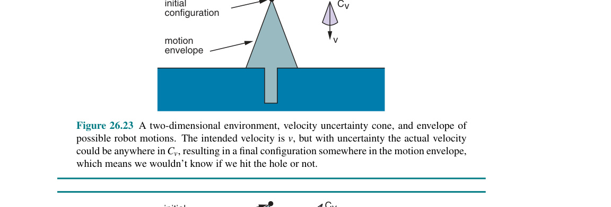
Hình 26.23 Môi trường 2D với lỗ cắm hẹp và nón bất định. Nếu đi thẳng xuống, robot có thể trượt và không biết phải di chuyển qua trái hay phải.
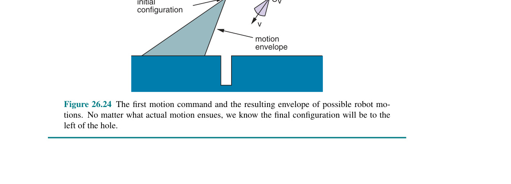
Hình 26.24 Một chuyển động có phòng vệ. Chủ đích điều khiển robot đi lệch hẳn sang trái tường trước.
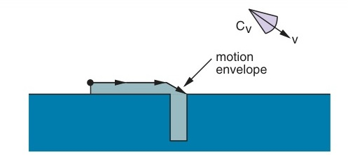
Hình 26.25 Chuyển động tiếp theo. Robot được điều khiển trượt theo tường, chắc chắn sẽ rơi xuống lỗ mà không bị lạc hướng bất chấp nhiễu điều khiển.
Một kỹ thuật khác là định vị chi phí vào những vùng an toàn, ví dụ quy tắc "hàng hải ven bờ" (Coastal navigation) yêu cầu robot đi sát các điểm chuẩn (landmarks) để có thể định vị mình thay vì ra vùng mở, hoặc cộng thẳng yếu tố "tăng cường thông tin" vào hàm chi phí.
Cho đến nay, chúng ta xem xét robot đã có sẵn mô hình động lực học của thế giới. Nhưng thường thì mô hình này rất khó viết thành các phương trình rõ ràng, đưa chúng ta tới với lĩnh vực học tăng cường (Reinforcement Learning - RL).
Thách thức lớn nhất khi áp dụng RL cho robot là độ phức tạp về số lượng mẫu thực tế (sample complexity). Thuật toán có thể chơi hàng triệu ván cờ trên mô phỏng trong vài giờ, nhưng thế giới thực luôn trôi qua với tốc độ 1 giây mỗi giây, khiến cho thời gian học trên robot thực tế tốn kém và mạo hiểm.
Cách tốt nhất để giảm thời gian thử nghiệm là dùng những gì đã biết về vật lý. Có thể dùng RL dựa trên mô hình (Model-based RL) để vừa tối ưu chính sách vừa cải thiện các tham số chưa biết (khối lượng, ma sát...).
Ta cũng có thể học hoàn toàn trên môi trường mô phỏng (simulation) rồi chuyển chính sách (policy) sang robot thật (quá trình gọi là sim-to-real). Để vượt qua khoảng cách giữa mô phỏng và thực tế (reality gap), ta áp dụng kỹ thuật ngẫu nhiên hóa miền (Domain randomization). Bằng cách cho robot tập với đủ loại mức ma sát, nhiễu sáng, màu sắc khác nhau trong mô phỏng, robot sẽ tạo ra một chính sách đủ bền vững cho môi trường vật lý. Cuối cùng, có các phương pháp kết hợp mô hình cục bộ với chính sách mạng nơ-ron sâu trực tiếp từ ảnh pixel (end-to-end learning).
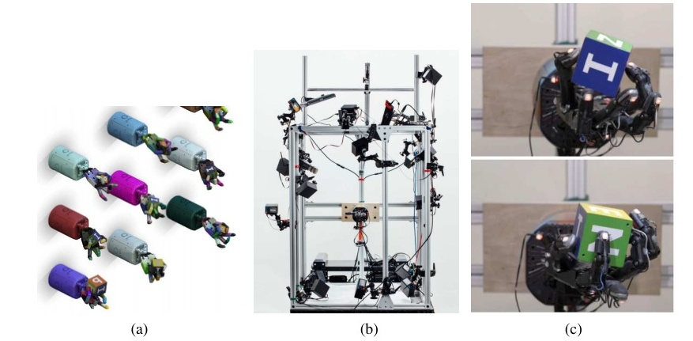
Hình 26.26 Huấn luyện chính sách bền vững. (a) Đa dạng hóa các tham số và ánh sáng trong mô phỏng. (b) Tay robot thật. (c) Kết quả huấn luyện sim-to-real.
Một cách khác để tăng tốc học tăng cường là tái sử dụng các kỹ năng thay vì điều khiển từng mức mô-men xoắn. Các kỹ năng cấp cao được gọi là Hành động nguyên thủy (Motion primitive). Ví dụ, nếu robot đá bóng đã biết kỹ năng "chuyền bóng cho điểm x, y", nó chỉ cần học cách khi nào nên áp dụng kỹ năng đó thay vì học lại cách xoay từng khớp cổ chân. Chúng ta cũng có thể dựa vào con người để khởi tạo mô hình học cho robot.
Phần lớn thời gian, chúng ta không chế tạo robot để hoạt động cô lập, mà để giúp đỡ và làm việc trong môi trường của con người. Điều này đặt ra hai thách thức lớn. Đầu tiên là bài toán Phối hợp (Coordination) — robot phải chọn hành động sao cho hòa hợp với những hành động của con người xung quanh. Khi có cùng mục tiêu chung, sự phối hợp biến thành Hợp tác (Collaboration). Thứ hai là tối ưu hóa chính xác những gì con người thực sự muốn. Việc tìm ra đúng hàm phần thưởng là một bài toán tương tác vô cùng phức tạp.
Giả sử robot đã có một hàm phần thưởng rõ ràng, nhưng giờ nó phải tối ưu hóa hàm đó trong khi có sự can thiệp của con người. Ví dụ, khi xe tự lái hòa vào làn đường cao tốc, nó phải "đàm phán" với tài xế đang đi trên làn mục tiêu: nên tăng tốc tạt đầu hay giảm tốc nhường đường? Hoặc khi robot đi dọc hành lang và gặp người đi ngược chiều, robot phải thể hiện rõ ý định sẽ đi tránh sang bên nào.
Con người như các tác tử xấp xỉ hợp lý (Humans as approximately rational agents)
Một cách để tiếp cận là mô hình hóa quá trình phối hợp như một trò chơi giữa robot và người. Cả hai đều có trạng thái (\(x_R, x_H\)), hành động (\(u_R, u_H\)) và hàm chi phí riêng (\(J_R, J_H\)). Trò chơi này gặp 3 vấn đề lớn:
1. Robot và người thường không biết mục tiêu của nhau. Đây là một trò chơi thiếu thông tin (Incomplete information game).
2. Không gian trạng thái và hành động là liên tục.
3. Con người không phải lúc nào cũng tối ưu hóa trò chơi hoàn hảo, họ có những tính toán dưới mức tối ưu mà robot cần phải hiểu và xử lý.
Để giải quyết, robot dùng nguyên tắc phân tách (như đã làm ở phần trước): Tách việc đưa ra các dự đoán về hành động con người khỏi việc quyết định hành động của bản thân.
Dự đoán hành động của con người
Robot có thể giả định con người bỏ qua sự tồn tại của nó, và họ hành động (có nhiễu) dựa theo một hàm mục tiêu \(J_H\) chưa biết. Robot có thể tạo mô hình phân phối xác suất \(P(u_H | x, J_H)\). Quá trình người thực hiện hành động sẽ tiết lộ dần hàm mục tiêu của họ cho robot:
$$ b'(J_H) \propto b(J_H)P(u_H | x, J_H) $$
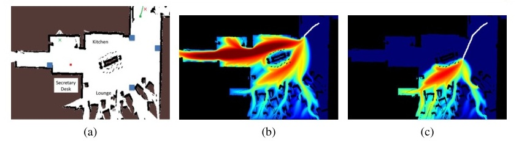
Hình 26.27 Đưa ra dự đoán thông qua các hành động trong quá khứ của người. Dựa trên quỹ đạo người đang đi, robot cập nhật niềm tin và suy diễn người đang đi ra cửa sổ chứ không phải nhà bếp.
Dựa vào niềm tin mới này, robot có thể dự đoán người sẽ làm gì tiếp theo và coi đó như một bài toán MDP thông thường, đưa ra kế hoạch cho riêng mình mà không va chạm. Tuy nhiên, nếu tách biệt dự đoán và hành động, robot sẽ đánh mất khả năng gây ảnh hưởng. Robot tiên tiến hơn sẽ tính toán gộp (jointly): Nó biết rằng nếu mình quyết liệt chuyển làn, người kia có thể sẽ phải phanh lại và nhường đường.
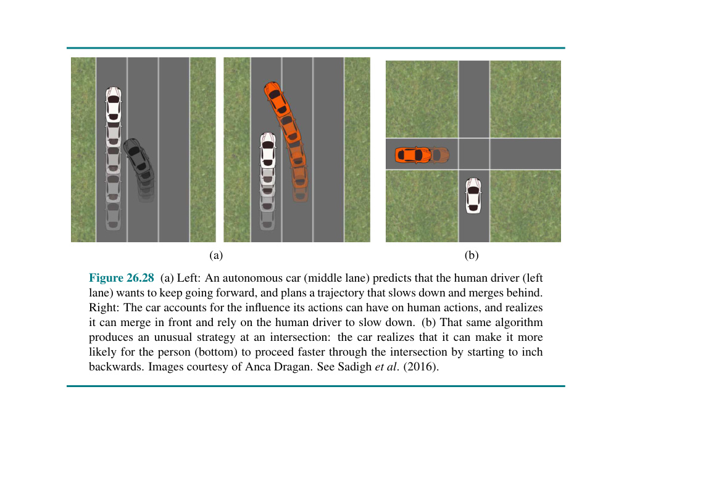
Hình 26.28 (a) Phối hợp hành vi nhập làn. Robot hiểu nếu nó thể hiện ý định rẽ rõ ràng, tài xế người sẽ chậm lại nhường. (b) Robot thỉnh thoảng lui lại để khuyến khích tài xế đi nhanh qua giao lộ.
Dự đoán của con người về robot
Đổi lại, con người cũng không biết mục tiêu của robot. Để dễ tương tác, robot cần hành động sao cho con người có thể dễ dàng đoán ra ý định thực sự của nó.
Khi robot và người cùng có một mục tiêu \(J_H = J_R\), ta có thể xem đó là một tác tử liên hợp (Joint agent). Dù vậy, con người có xu hướng thay đổi ý định ngẫu nhiên trong lúc hợp tác. Do đó, kỹ thuật Điều khiển dự đoán mô hình (MPC) rất hữu ích: robot lên kế hoạch kết hợp, thực hiện bước đầu tiên, quan sát con người, và lập lại kế hoạch nếu người làm khác đi.
Con người như tác tử hộp đen
Cách thứ hai là coi con người đơn thuần như một yếu tố gây nhiễu môi trường, gọi là chính sách \(\pi_H\) chưa biết. Robot có thể dùng dữ liệu thu thập được để học xấp xỉ \(\pi_H\) rồi vạch ra phương hướng tối ưu.
Trong thực tế, chỉ định một hàm chi phí hoàn hảo từ đầu (như xe phải nhanh, an toàn, nhẹ nhàng, đúng luật...) là cực kỳ khó. Chúng ta có hai hướng để dạy robot.
Học tùy chọn: Học hàm chi phí (Preference learning)
Cũng dựa trên mô hình toán học tương tự như dự đoán hành vi con người, nếu một người "chạy mẫu" cho xe tự lái, và người đó lái rất cẩn thận, robot có thể suy luận ra rằng hàm chi phí của người này đặt tỷ trọng rất cao cho "Sự an toàn". Bằng cách này, robot hấp thụ hàm chi phí đó và đem áp dụng khi tự vận hành.
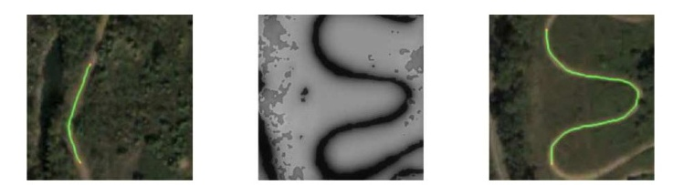
Hình 26.29 Học tùy chọn. Dựa trên việc người lái trên đường đất (trái), robot trích xuất hàm chi phí muốn đi trên đường, từ đó áp dụng sang bản đồ mới (phải).
Học chính sách trực tiếp thông qua bắt chước (Imitation Learning)
Phương pháp thứ hai là không cần học hàm chi phí, chỉ lưu lại bộ dữ liệu (trạng thái, hành động) và sử dụng học có giám sát để tạo một chính sách \(\pi\). Đây gọi là Học bắt chước (Imitation learning) hay Sao chép hành vi (Behavioral cloning). Thách thức của phương pháp này là Khả năng tổng quát hóa (Generalization). Nếu một khi robot mắc sai lầm và văng ra khỏi "đường ray" dữ liệu đã từng được dạy, nó sẽ không biết phải làm gì tiếp theo.
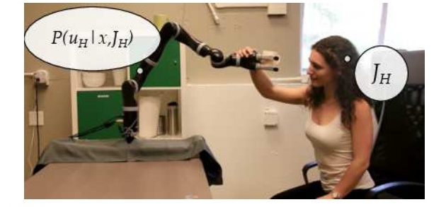
Hình 26.30 Giáo viên hướng dẫn đẩy robot xuống thấp để dạy nó phải hoạt động gần mặt bàn hơn.
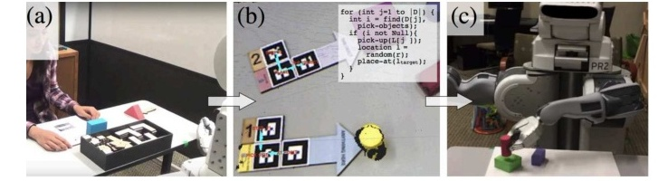
Hình 26.31 Giao diện lập trình bằng các khối khối trực quan đặt trong vùng không gian làm việc của robot.
Để khắc phục sự cố đi chệch khỏi dữ liệu huấn luyện, ta có thể dùng thuật toán DAGGER (Data Aggregation). Thuật toán bắt đầu bằng dữ liệu của người, huấn luyện \(\pi_1\), rồi cho robot chạy thử \(\pi_1\). Tại những nơi robot làm sai hoặc gặp trạng thái mới, ta yêu cầu con người "gán nhãn" hành động đúng, bổ sung vào kho dữ liệu, và đào tạo tiếp \(\pi_2\). Việc này lặp lại liên tục. Ngoài ra, việc dùng mô hình đối kháng (adversarial training) để phân biệt giữa hành vi thực của người và của robot cũng đang rất phổ biến.
Bài toán tương ứng và các giao diện dạy học (The correspondence problem)
Khác với ô tô (cả người và máy đều bấm ga, xoay vô lăng), việc bắt chước một cánh tay robot dọn bàn bếp phức tạp hơn nhiều. Người ta không thể dễ dàng sao chép chuyển động 5 ngón tay người vào cái kẹp 2 ngón tay của robot. Đây được gọi là Bài toán tương ứng (Correspondence problem).
Một cách khác là Dạy học động học (Kinesthetic teaching): người dùng trực tiếp nắm lấy cánh tay robot và kéo qua kéo lại để ghi dữ liệu. Nó khá khó và tốn sức. Người ta đang tìm đến những cách như: dạy thông qua Khung hình chính (Keyframes) (chỉ chỉ ra những mốc quan trọng), hoặc dùng Lập trình trực quan (Visual programming) (ví dụ xếp các khối gỗ có mã nhận diện).
Xuyên suốt từ đầu, chúng ta tiếp cận robotics thông qua cách thiết lập hàm phần thưởng và tối ưu nó (qua lập kế hoạch hoặc máy học). Góc nhìn đó gọi là góc nhìn Cân nhắc (Deliberative). Trái ngược với nó là góc nhìn Phản ứng (Reactive).
Đôi khi, việc viết một quy tắc đơn giản lại dễ hơn việc xây dựng mô hình và lập kế hoạch (tương tự như một Tác tử phản xạ). Ví dụ với robot có chân (Hình 26.32), việc dùng lập kế hoạch trong không gian cấu hình 18 chiều (6 chân x 2 khớp + 6 tọa độ) là bất khả thi về mặt tính toán. Thay vào đó, người ta gán một quy tắc dáng đi (Gait): nâng một chân, tiến tới, nếu bị kẹt, rụt lại và nhấc cao hơn. Bộ não của nó là một cỗ máy trạng thái hữu hạn.
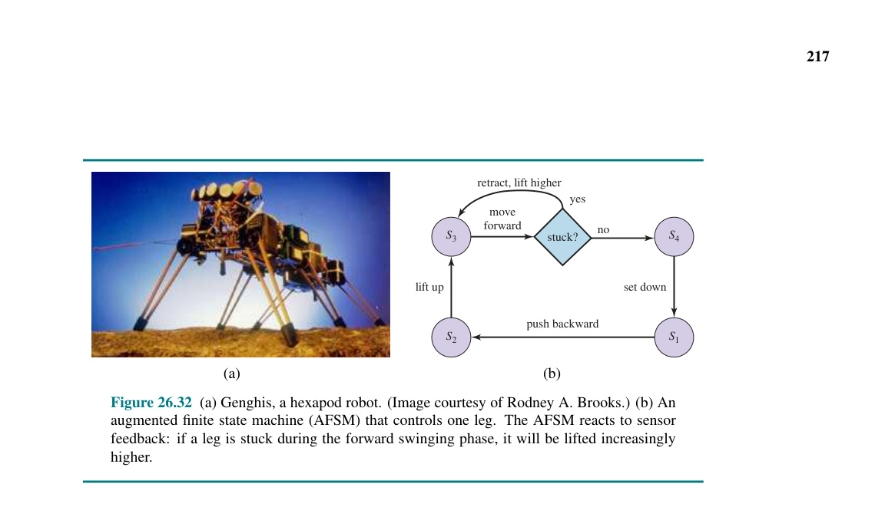
Hình 26.32 (a) Genghis, một robot 6 chân (Hexapod robot). (b) Cỗ máy trạng thái hữu hạn (AFSM) điểu khiển một cái chân tự động nhấc cao hơn nếu bị kẹt mà không cần phải lập bản đồ không gian 3D phức tạp.
Khung kiến trúc Bao hàm (Subsumption architecture) xây dựng robot thông qua mạng lưới các Máy trạng thái hữu hạn tăng cường (AFSM), trong đó có bổ sung thêm các bộ đếm thời gian (đồng hồ).
Các AFSM được kết nối từ dưới lên. Bắt đầu từ các AFSM điều khiển từng chân, rồi đến cụm AFSM điều phối sự thăng bằng của cả con robot, cuối cùng là AFSM ở lớp cao nhất nhận dạng vật cản để bẻ hướng. Phương pháp này rất mạnh ở khả năng đối phó với môi trường động ngẫu nhiên, không sợ ma sát hay trượt ngã, và chạy ngay trên cảm biến thô.
Tuy nhiên, nó cũng có khuyết điểm: việc tích hợp các dữ liệu nhớ (bản đồ, quá khứ) rất khó khăn. Hơn nữa, những bộ điều khiển phản ứng này thường chỉ biết làm một nhiệm vụ cứng nhắc (như bọ hung), khó khăn trong việc mở rộng khi muốn đổi sang các nhiệm vụ phức tạp hơn cần tầm nhìn xa rộng.
Công nghệ Robot đang len lỏi khắp mọi nơi.
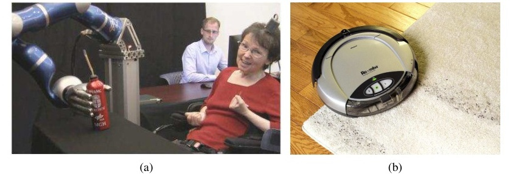
Hình 26.33 (a) Bệnh nhân dùng giao diện não-máy điều khiển robot lấy đồ uống. (b) Roomba, robot hút bụi thông minh phổ biến nhất.
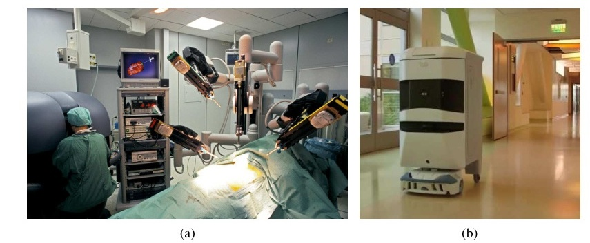
Hình 26.34 (a) Robot phẫu thuật Da Vinci. (b) Robot vận chuyển trong bệnh viện.
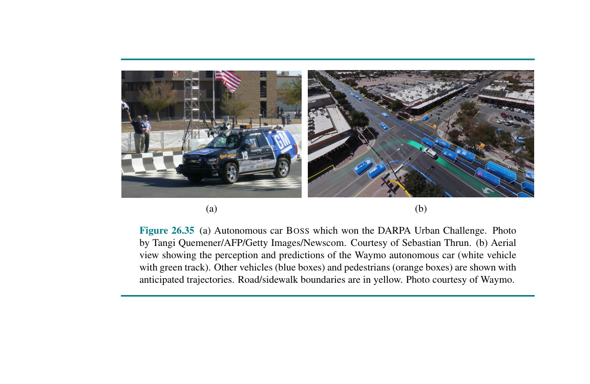
Hình 26.35 (a) Chiếc xe BOSS giành chiến thắng tại DARPA Urban Challenge. (b) Góc nhìn từ xe của Waymo cho thấy nó phải bao quát các phương tiện và người đi bộ để tính toán quỹ đạo.
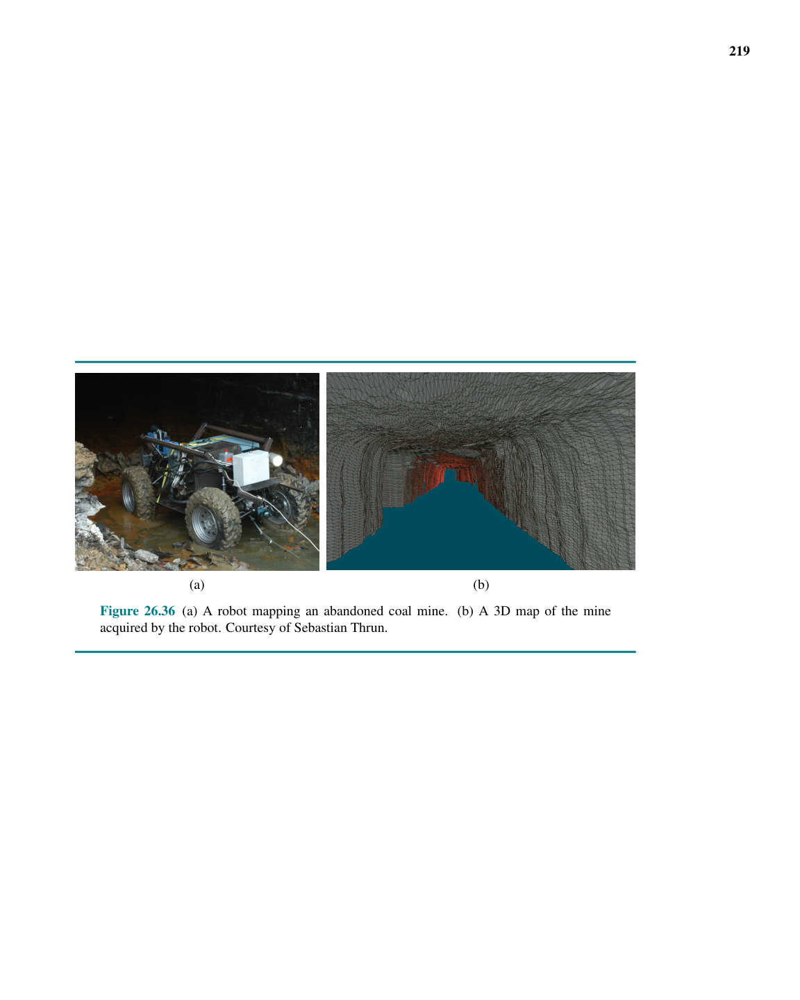
Hình 26.36 (a) Một robot đo đạc mỏ than bị bỏ hoang. (b) Bản đồ 3D của mỏ do robot lập ra. (Ảnh do Sebastian Thrun cung cấp).
Robotics nói về các tác tử có cơ thể vật lý, có thể làm thay đổi trạng thái của thế giới thực. Trong chương này, chúng ta đã học được:
Từ "robot" được phổ biến bởi nhà viết kịch người Séc Karel Čapek trong vở kịch R.U.R. (Rossum's Universal Robots) năm 1920. Tuy nhiên, ý tưởng về máy móc tự động đã có từ hàng nghìn năm trước trong thần thoại Hy Lạp với robot Talos, và các mô hình tự động cổ đại từ thế kỷ thứ 3 TCN.
Grey Walter's "turtle" (1948) được coi là robot di động tự hành đầu tiên. Sau đó là "Shakey" (những năm 1960), robot di động đa năng đầu tiên kết hợp nhận thức, lập kế hoạch và thực thi. Cánh tay robot thương mại đầu tiên là UNIMATE (1961), được dùng trong nhà máy General Motors, khởi đầu cho cuộc cách mạng công nghiệp rô-bốt.
Các cuộc thi như AAAI mobile robot competition (1992), RoboCup (1995), và đặc biệt là DARPA Grand Challenge (2004, 2005) đã thúc đẩy mạnh mẽ sự phát triển của ô tô tự lái và robot di động.
Lĩnh vực vẽ bản đồ robot (SLAM) bắt nguồn từ việc áp dụng bộ lọc Kalman và biểu diễn lưới chiếm dụng (occupancy grid). Lập kế hoạch chuyển động có nền tảng vững chắc với các công trình về không gian cấu hình của Lozano-Perez (1983) và các thuật toán xác suất PRM, RRT vào những năm 1990-2000.
Các phương pháp tối ưu hóa quỹ đạo học và điều khiển hệ thống động lực học có vô số tài liệu, nổi bật là các công trình về điều khiển phản kháng, điều khiển thích nghi, điều khiển bền vững và phân tích Lyapunov.
Học tăng cường trong robotics khởi sắc từ các nghiên cứu điều khiển trực thăng tự hành vào đầu những năm 2000 (Bagnell, Ng). Gần đây, học tăng cường sâu (Deep RL) và sim-to-real đã giúp robot học các tác vụ thao tác phức tạp ngay từ hình ảnh thô. Các lĩnh vực tương tác giữa người và robot (HRI), học từ minh họa, lập kế hoạch phối hợp cũng đang là những chủ đề cực kỳ sôi động.
Cuộc tranh luận giữa các kiến trúc phần mềm cho robot — từ kiến trúc cân nhắc ba tầng cổ điển, đến kiến trúc bao hàm phản ứng của Brooks (1986) — vẫn là một đề tài thú vị để các nhà nghiên cứu tiếp tục khai phá và hoàn thiện.